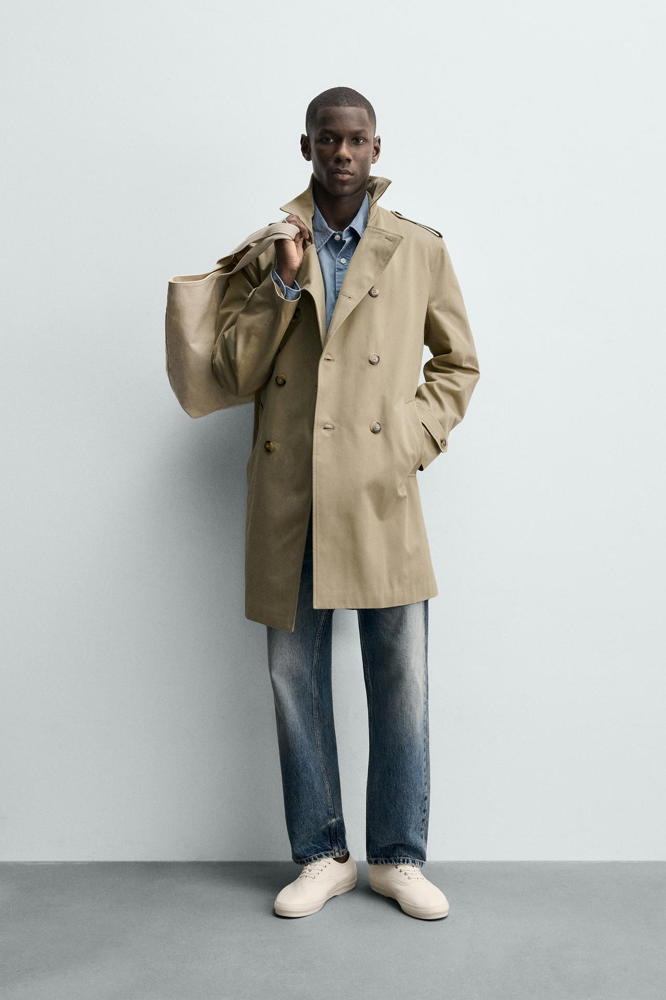
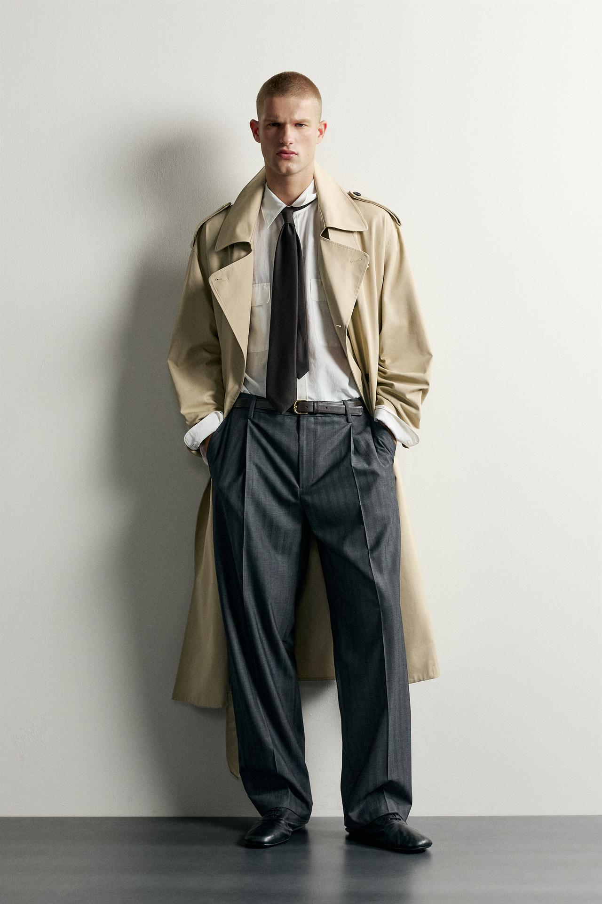
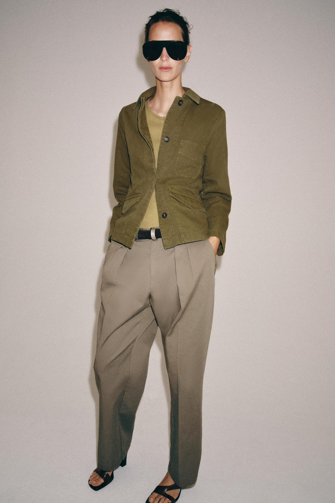
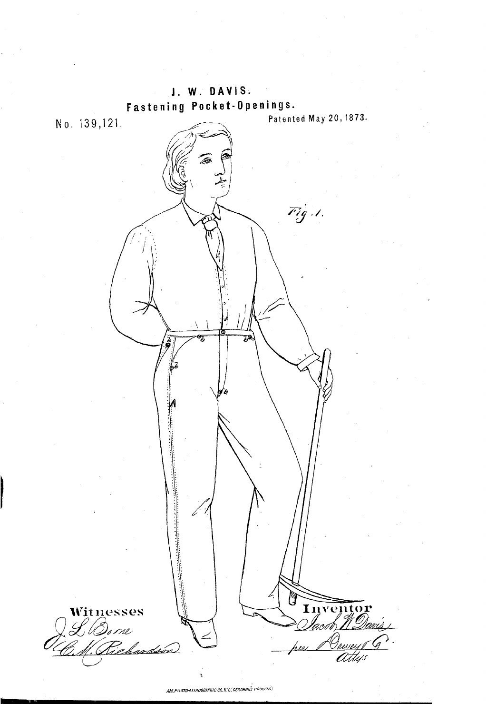
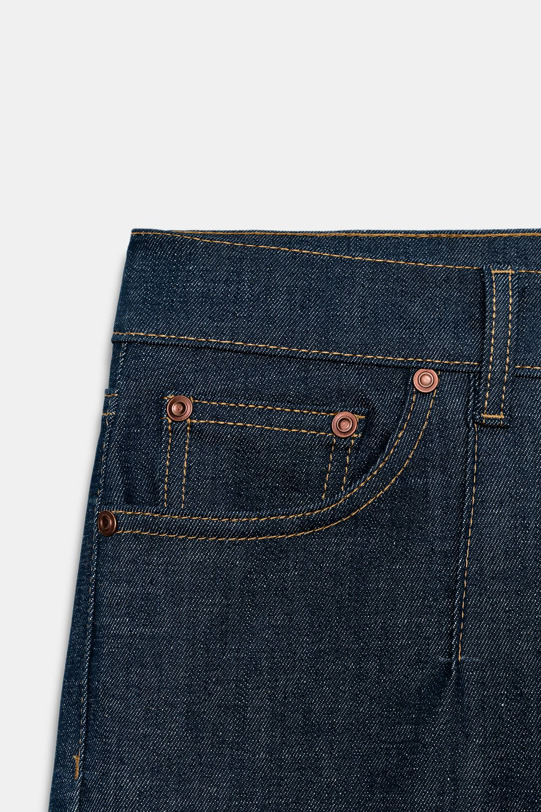
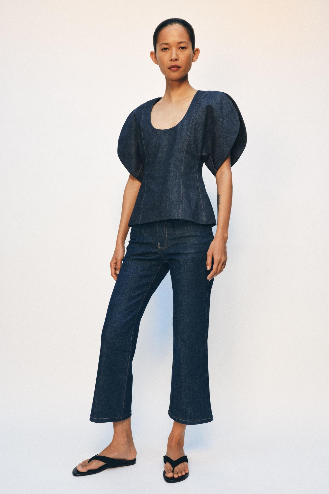
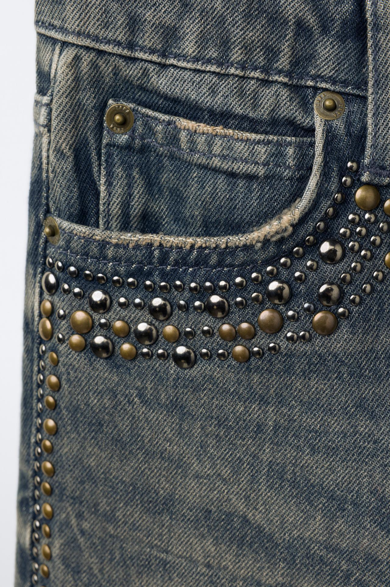

风衣肩部的一条袢带，曾经可以承载军衔标识；牛仔裤袋口的金属铆钉，则与防止缝线受力开裂有关。进入日常穿着之后，原来的任务发生了变化，肩袢、口袋和铆钉却仍然被保留下来，继续调节衣服、方便使用，也参与外观设计。
以ZARA的风衣、棉质多口袋夹克和牛仔裤为例，可以看到一种具体的变化：服装细节最初回应身体与工作需要，进入日常穿着后，原有功能有的继续使用，有的减弱，有的又被放大成装饰。理解这些变化，能让我们看懂衣服怎样形成，而不只停留在“有工装感”或“像军装”的印象。
风衣：几条袢带，原来各有自己的位置与任务

图1：ZARA米色双排扣风衣，肩袢、门襟与可调袖口保留了典型的风衣结构。来源：ZARA官方商品页。
图1这件ZARA风衣，肩上有袢带，前面是双排扣，袖口也有调节部件。它们分布在肩、身体正面和手腕附近，并不是随意把同一种装饰贴到几个位置。把这些部位放回穿着动作里，就更容易理解它们为什么长这样。
今天中文常说的“风衣”范围较宽，日常谈论肩袢、双排扣、腰带和袖口袢这一组细节时，主要指向的是与户外防护服装、军用雨衣的发展密切相关的trench coat类型。第一次世界大战期间，这类外套在军官中广泛使用；战后继续进入平民穿着，后来又通过电影与时装传播。它并非战壕中所有士兵统一穿着的外套。英国国家陆军博物馆
在军用语境中，肩袢可以显示军衔等标识。袢带一端与肩部相连，另一端通过扣合形成固定位置，因而能承载标识或固定某些物件。今天，图1肩部仍有这个可辨认的形状，但没有军衔。留下来的，是原来有使用任务的部件，以及它在肩头形成的轮廓。
这种变化很容易在身上体会。肩袢把肩部切出一条横向边线，即使没有任何文字或徽章，也会让人更容易注意到外套的肩头。它继续参与服装的外形，却不再负责说明穿着者在军队中的级别。一个细节可以失去原来的识别用途，同时获得新的造型作用。
袖口袢解决的又是另一件事。袖口是衣服与手腕之间的开口，收紧可以减少开口，帮助抵御从这里进入的风雨；放松则方便活动与穿脱。V&A关于风衣结构的资料，将可调袖口、护颈部件和挡雨结构分别联系到不同部位的防护。整件外套的实用性，是这些局部配合形成的。V&A风衣结构资料
腰带则让同一件外套能改变腰部的包围程度。外面多穿一层、少穿一层，或者希望敞开与扣合，腰部需要的空间会不同。把布带从两侧绕过，再扣紧或系住，就能调节衣身，而不必完全依靠原本固定的腰线。图1对应的官方说明仍列有可调腰带与袖口，这些部件没有只剩下一个名字。
需要注意，能调节袖口并不等于整件衣服防水。雨能否被挡住，还涉及面料、接缝和开口的具体处理。今天看到一件衣服有典型风衣细节，首先能确认的是它采用了这套形态；实际防护能力要看商品说明与使用条件。
同样的风衣结构，怎样进入不同的日常穿法
图2：ZARA驼色风衣：肩袢与袖口袢仍在，腰间则系上一件深蓝针织衫。来源：ZARA官方商品页。
图2这件ZARA风衣能清楚看见肩袢、双排扣和较宽的袖口袢。人物没有把腰部整理成一条平整皮带式的线，而是在外面系上一件深蓝针织衫。针织衫的体积把腰间加厚，也使原来沿衣身向下的浅色表面，在中间被一条深色横带打断。
这不意味着原来的调节结构已经失效，而是日常穿着又加入了别的处理。肩袢与袖口袢仍然使这件外套容易被识别为风衣；腰间的形状，却由针织衫参与决定。部件、穿法和搭配不需要永远保持同一套历史状态。
这张图也提供了一个重要的实物区别：官方把这件衣服描述为采用防泼水面料，并明确将适用情境限定在短时间接触细小雨滴。它保留风衣外观，同时提供一定天气用途；但不能把这项说明扩成适用于长时间大雨的承诺。ZARA该款说明

图3：另一件ZARA宽松风衣敞开穿着，搭配衬衫、领带与宽裤。来源：ZARA官方商品页。
图3是另一件宽松风衣。前襟敞开，里面的衬衫、领带与长裤露出，腰部没有被紧紧束住；肩袢仍留在两侧，翻领与双排扣位置则构成打开后的边缘。穿着重点由“怎样把身体包住”，移到了“打开之后怎样形成内外两层”。
这里保留了长衣身与宽松空间，可以套在其他衣服之外；同时，人物把袖子向上整理，露出里面的衬衫袖口。相同类型的外套，既可以扣起、系紧，也可以敞开、调整袖子。原有结构提供了一些可能性，最终呈现哪一种状态，还取决于穿着者实际怎样使用。
肩袢尤其能说明这种延续：它在历史上承担标识或固定任务，在这张图里则主要作为可见的肩部细节。腰带仍可以用来收束，但当前穿法选择不收紧。功能并非只有“完全存在”或“完全消失”两种状态，也可以暂时不使用，等需要时再启用。
工装口袋：把要用的东西，放到伸手能够到的位置
工装并不是只有一种外套。不同劳动有不同的工具、动作与环境，服装随之产生不同安排。以外置贴袋为例，一块袋片缝在衣身外面，开口和容量容易安排，也便于把不同物品分开放置。它在许多工作外套上反复出现，与随身携带、快速取用有关。
历史资料可以帮助我们确认某种形式已经出现，而不必给所有工装寻找同一个发明人。Carhartt档案中保存了1917年的Chore Coat广告；品牌档案工作者也在美国档案工作者协会的文章中展示并说明了这份记录。这是工作外套发展的一项具体证据，不是说所有贴袋都从这件外套开始。Carhartt档案记录
口袋的用途不能只用“大”或“多”解释。放在胸前的小袋，手抬起即可接近；放在腰部两侧的较大袋，能够容纳更大的随身物品。开口方向决定伸手的路径，袋盖会多一道掀开的动作，也可能帮助遮盖开口。位置、形状和取用动作，需要一起看。
这也解释了为什么工装的视觉特点经常很容易辨认：袋片本身就在外面，占据了衣身的几个明确区域。人在远处还看不清里面装了什么，已经能看到胸前一块、腰侧两块的安排。可见形状与使用位置原本相互对应，后来这种排列逐渐成为工装设计中熟悉的形式。

图4：ZARA多口袋棉质夹克：胸部贴袋与腰部翻盖口袋集中在衣身正面。来源：ZARA官方商品页。
图4这件ZARA棉质夹克，胸前是一处明显的贴袋，腰部两侧是带盖口袋。与其给它概括一个“实用气质”，不如具体看这些部件怎样排在身上：胸袋靠近上半身，腰部袋盖分列前襟两侧，中间保留通向领口的开合位置。口袋形成了正面几处主要的形状。
这些口袋进入日常造型后，周围的关系也改变了。夹克里露出同类色调的上衣，下装是带褶的长裤，人物穿凉鞋；画面没有展示工具、工作过程或防护装备。外套保留了与工作服有关的口袋排列，却被放进了另一套衣着组合。
衣身在腰附近结束，口袋集中在较短的一段外套上，袋盖与胸袋因而成为很醒目的局部。下装又没有继续复制同样一组外置口袋，人物上下身的结构就不完全相同。这里值得研究的是工作服部件怎样被重新组织，而不是凭一件夹克给穿着者安排一个职业。
同样需要保留实际使用的判断。一件日常夹克有口袋，确实可以装东西；但它是否适合反复携带沉重工具，还要看袋布、加固和整体结构。工作服上的一个可见特征，被移到时装里，不代表原来整套工作要求也被一起复制。
牛仔铆钉：一个加固口袋的办法，怎样成为熟悉的外观

图5：1873年美国第139121号专利图页，图中的小标记对应口袋开口等位置的加固点。来源：美国专利原件（公开领域）。
牛仔裤上的小金属件，最适合从一份明确的原始资料讲起。1873年5月20日，Jacob W. Davis关于口袋开口加固的美国专利第139121号获准，权益安排涉及他本人和Levi Strauss & Co.。专利关注的是口袋附近的缝线会因经常受拉而开裂，并提出在相关端点增加金属铆钉或类似固定件。1873年专利原文
图页中，小写字母标记指向几处加固位置。说明书进一步解释，金属件穿过并夹紧连接的布层，使反复拉扯时的受力不全落在缝线上。问题是局部的，所以解决办法也集中在局部：不需要把整条裤子都覆盖金属，只需关心容易开裂的端点。
可以用一个日常动作理解这种受力。手伸进口袋，或者物品向外撑开袋口，开口两端会反复受到牵拉。缝线承担连接任务，铆接则在特定位置补充固定。金属件出现在袋角，与它要处理的受力位置有关；它起初不是为了让整条裤子多几处亮点。
这份专利也没有声称发明了一切金属铆接。原文提到此前已经有鞋类接缝使用铆钉的专利，并将自己的主张放在裤装口袋开口的具体应用上。理解这个范围，有助于避免把“某项用途获得专利”写成“从此才有金属扣件”或“从此才有裤子”。

图6：ZARA牛仔裤同款静物近景：铜色金属件位于大袋口和小口袋的端点。来源：ZARA官方商品页。
图6是ZARA一款牛仔裤的官方口袋近景。大袋口的两端以及嵌在里面的小口袋端部，都能看见铜色金属件；橙色线迹沿袋口和小袋边缘延伸。金属件没有随机散布在布面上，而是落在开口附近的几个交接位置，与前面讲的加固思路形成了可观察的对应。
“铜色”在这里描述外观，不等于已经核实金属成分。仅凭正面照片，也不能测出每个金属件实际承担多少拉力。不过，我们已经可以把这幅图读得更具体：线迹勾出连接关系，金属件标出若干端点，而端点正是理解口袋开合与受力的关键位置。
这一组细节后来又形成了稳定的外观经验。深蓝布面上有对比线迹，袋角有金属圆点，腰部还有袢带与开合部件。即使观看者没有学过1873年的专利，也可能一眼认出牛仔裤的口袋。一个最初为使用而安排的细节，在长期保留之后，也参与了品类识别。

图7：同款ZARA牛仔裤与立体袖上衣组成日常造型，五袋结构被放进新的穿着场景。来源：ZARA官方商品页。
图7展示同款裤子的整套造型。上衣采用立体展开的短袖和较清楚的腰部线条，下装则保留五袋牛仔裤的基本安排，并把裤脚做成较短、向外展开的形状。这套衣服的穿着重点，显然不再是十九世纪工作裤所面对的劳动环境。
但使用场景改变，并不要求把所有旧细节都去掉。袋口仍是开口，缝线仍在连接布层，端点金属件仍处在原来的结构位置。新轮廓与旧部件可以同时存在，历史变化也因此不总是“拿掉功能，留下装饰”这么简单。有时改变的是整套穿着的目的，局部结构却继续被使用。
当金属件开始排列成图案，装饰作用就更明显了

图8：另一款ZARA牛仔裤的口袋近景：端点金属件之外，大小饰钉沿袋口和侧面排列成图案。来源：ZARA官方商品页。
图8是另一款ZARA牛仔裤的近景。小口袋上方与大袋口附近，仍有较少量、位于端点的铜色金属件；但再向下看，出现了多排大小不一的金属圆点。它们沿口袋曲线展开，又在侧面向下延伸，形成连续的图案。
这张图可以把两种安排放到一起比较：一组金属件集中在结构交接位置，另一组则跨过较大的布面，按照疏密、大小和曲线组织。后者的数量与排列已经超出了只在开口端点作局部固定的需要，装饰成为明显的观看重点。
这里没有必要只看见金属就统称“加固铆钉”。服装上可以有承担连接或加固任务的金属件，也可以有以装饰为主的饰钉；外观接近，具体构造和作用仍可能不同。这款商品的官方名称与说明采用了饰钉描述，照片中也能看见它们被排列成图案。
两类细节放在同一件衣服上，并不互相排斥。结构端点保留熟悉的牛仔裤信息，密集饰钉又带来新的表面内容。与图6相比，变化的不只是“多了几颗钉”，而是金属件开始占据更大面积，承担更明显的图案组织作用。
这也是从功能到装饰的一种具体变化方式：原本与某个受力点相联系的形状，被扩展到不再只依赖该受力点的位置。理解变化，需要比较金属件放在哪里、怎样排列，而不是只问衣服有没有金属。
保留下来的，有功能，也有让人认出这类衣服的线索
把三组案例放在一起，可以看到不同细节并没有沿同一条路变化。
| 细节 | 历史用途或形成背景 | 在本文ZARA案例中怎样继续出现 |
|---|---|---|
| 风衣肩袢 | 军用外套上的标识、固定安排 | 保留肩部袢带形状，日常穿着中主要成为可见细节 |
| 风衣腰带与袖口袢 | 调节开口与衣身包围程度，配合防护 | 仍可调节，也可以放松、敞开或与其他系腰方式组合 |
| 工装式外置口袋 | 随身分放物品，便于伸手取用 | 保留口袋与袋盖，同时组织日常夹克的正面 |
| 牛仔口袋端点金属件 | 针对开口附近的受力与开裂作局部加固 | 保留相应位置，也成为熟悉的牛仔裤细节 |
| 成片排列的饰钉 | 本文实例主要体现装饰安排 | 通过数量、大小、曲线和面积形成新的图案 |
这些案例也说明，服装历史不能被写成每个部件都已经失去用途。腰带仍然可以束住衣身，口袋仍然可以放东西；改变的是它们被穿到什么地方、需要完成多强的任务，以及与其他衣服怎样组合。
另一种延续则更接近识别。肩袢不再显示军衔，仍然使风衣的肩头有一个熟悉形状；口袋端点的金属圆点，即使观看者不了解其原理，也参与了对牛仔裤的辨认。使用留下的形式，经过长期重复，可以成为理解服装的一种视觉线索。
因此，看ZARA或其他品牌的衣服时，可以沿着一条具体路径继续观察：这个细节原来针对什么问题，今天是否仍然能完成相应动作，又有哪些位置、比例或组合已经改变。这样，肩袢不只是一条袢带，口袋也不只是几块装饰；它们让一件日常衣服与过去的使用方式发生了联系。
资料与图片
历史范围以英国国家陆军博物馆、V&A、Carhartt档案工作者的记录及1873年专利为依据，分析限于本文涉及的细节，不将某一家公司的历史等同于所有风衣或工装的起源。
ZARA商品页与图片核对于2026年11月。七幅官方商品照片均在对应段落直接嵌入，保留原图比例；图5来自已进入公开领域的美国专利原件，日期与编号由专利及美国国家档案资料入口交叉核对。原图版权按各自来源归属，本文未实物拆解、进行防水或强度测试。
留言
由 Disqus 提供。